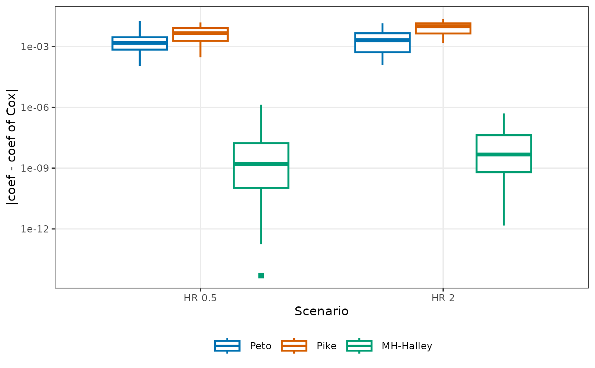
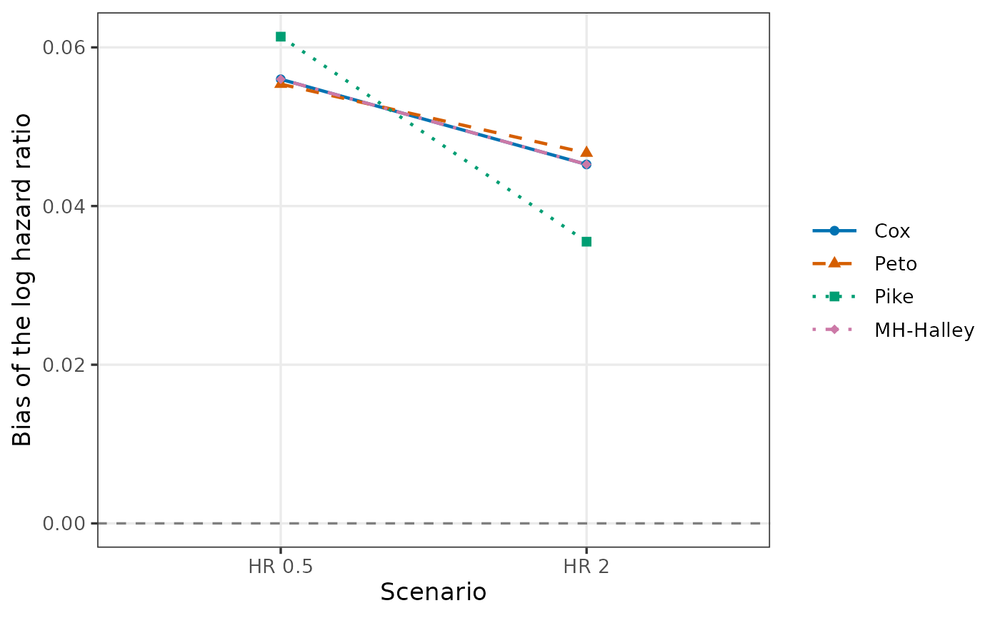
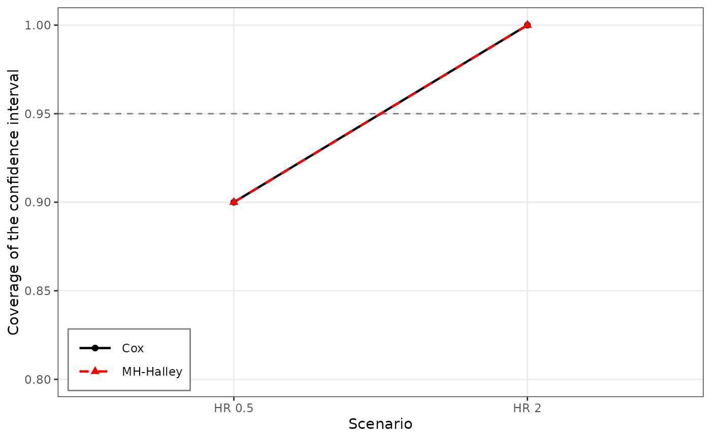

Plot operating characteristics of hazard ratio estimators
Source:R/plot.CompareOC.R
plot.CompareOC.RdPlots a result of CompareOC with ggplot2. With
what = "deviation", box plots of the absolute deviation of each
method from the reference estimator in the replicates, grouped by
scenario, on a logarithmic axis. With the other values of what, a
summary of each method (bias, RMSE, coverage, median ratio of the standard
errors to that of the reference, or computing time per replicate) across
the scenarios, as points joined by lines, with a dashed reference line at
the target value (0 for the bias, conf.level for the coverage, and
1 for the ratio of the standard errors).
Usage
# S3 method for class 'CompareOC'
plot(
x,
what = c("deviation", "bias", "rmse", "coverage", "se_ratio", "time"),
methods = NULL,
labels = NULL,
col = NULL,
shape = c(16, 17, 15, 18, 1, 2, 0, 5),
size = 2,
linetype = c("solid", "dashed", "dotted", "dotdash", "longdash", "twodash"),
linewidth = 0.8,
base_size = 11,
legend_pos = "bottom",
legend_ncol = NULL,
xlab = "Scenario",
ylab = NULL,
main = NULL,
ylim = NULL,
floor = 1e-16,
...
)Arguments
- x
An object of class
"CompareOC"returned byCompareOC().- what
Quantity to plot:
"deviation"(default),"bias","rmse","coverage","se_ratio", or"time".- methods
Methods to plot, in the order of the legend. Default
NULL: all methods, except the reference for"deviation"and"se_ratio".- labels
Labels of the methods in the legend, one per method of
methods. DefaultNULL: the names of the methods with underscores replaced by hyphens, such as"MH-Halley".- col
Colors of the methods, recycled. Default
NULL(the Okabe-Ito palette).- shape
Point shapes of the methods, with the numbers of
pchof base graphics, recycled; for"deviation", the shapes of the outlying points of the box plots. Defaultc(16, 17, 15, 18, 1, 2, 0, 5)(filled circle, triangle, square, and diamond, then the open ones), so that methods with nearly equal values remain distinguishable.- size
Size of the points. Default 2.
- linetype
Line types of the methods, recycled (not used for
"deviation"). Defaultc("solid", "dashed", "dotted", "dotdash", "longdash", "twodash").- linewidth
Width of the lines, and of the outlines of the box plots. Default 0.8.
- base_size
Base font size in points, as in
ggplot2::theme_bw(). Default 11.- legend_pos
Position of the legend:
"bottom"(default),"top","right", or"left"(outside the plot panel),"none", or a numeric vectorc(x, y)with elements between 0 and 1 for a position inside the panel (c(1, 1)is the top right corner).- legend_ncol
Number of columns of the legend, filled row by row in the order of the methods. Default
NULL: at most 3 for a legend at the bottom or top, and 1 otherwise.- xlab, ylab, main
Axis titles and main title.
ylab = NULLgives a title that describeswhat.- ylim
Limits of the vertical axis, two increasing numbers (positive on a logarithmic axis). Default
NULL(the range of the values and of the reference line). Values beyond the limits are kept in the box plots and cut at the edge of the panel.- floor
Smallest deviation shown with
"deviation", a positive number; smaller deviations (including 0) are drawn atfloor. Default1e-16.- ...
Not used.
Value
A ggplot object. It is drawn when it is printed, which
happens automatically at the top level; inside functions and loops, call
print() or save it with ggplot2::ggsave(). It can be
modified further with ggplot2. The vertical axis is logarithmic
for "deviation", and for "time" when all times are
positive.
Examples
scenarios <- data.frame(label = c("HR 0.5", "HR 2"), n_T = 100,
n_C = 100, hazard_C = log(2) / 18,
HR = c(0.5, 2), a = 12, E = 110)
res <- CompareOC(scenarios, c("Cox", "Peto", "Pike", "MH_Halley"),
nsim = 30, seed = 1)
plot(res)

plot(res, what = "bias", legend_pos = "right", base_size = 13)

plot(res, what = "coverage", methods = c("Cox", "MH_Halley"),
col = c("black", "red"), linetype = c(1, 2), ylim = c(0.8, 1),
legend_pos = c(0.02, 0.02))
